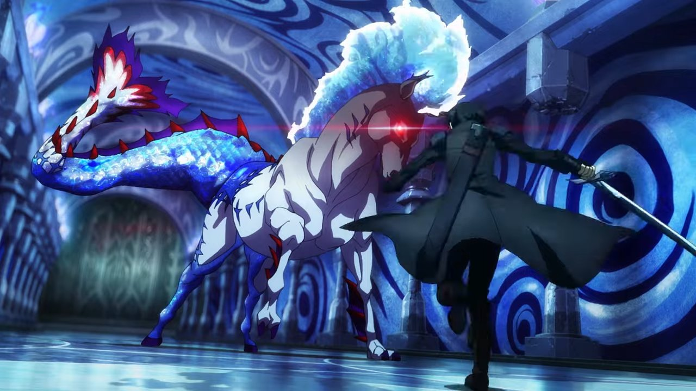

Anime
La temporada final de Shingeki no Kyojin dejaría 9 capítulos pendientes de adaptar
El popular leaker “@SPYTRUE” aseguró en redes que “ya está confirmado” que la 2da parte del Shingeki no Kyojin:
The Final Season, terminará con la adaptación del capítulo 130 del manga de Hajime Isayama. Esto dejaría de
los capítulos 131 al 139 (que corresponden a los volúmenes 33 y 34) pendientes de adaptar ya sea en una
nueva temporada o en una pelicula. Cabe señalar que esta información está pendiente de confirmar.
Esta segunda parte estuvp en emisión durante el 9 de enero hasta el 03 de abril (debido a que una semana antes se
atraso la emisión) mientras que las plataformas Crunchyroll y Funimation se encargan de su distribución en Latinoamérica,
con ambas distribuyendose con el doblaje al español latino disponible desde el pasado 13 de febrero (en la modalidad de
SimulDub, es decir, un nuevo episodio de forma semanal).
Leer más...

Anime
La segunda película de Sword Art Online the Movie -Progressive- estrena teaser
Una presentación celebrada en el AnimeJapan 2022 ha mostrado un teaser de Sword Art Online the Movie -Progressive-
Scherzo of a Dark Dusk, la que será la película secuela de Sword Art Online The Movie -Progressive- Aria of a
Starless Night. También se mostraba un vídeo promocional para el 10.º aniversario de la franquicia, confirmándose
que el 6 de noviembre se celebrará un evento especial en Tokio para conmemorarlo.
La primera película de Progresive, Sword Art Online: Progressive – Hoshinaki Yoru no Aria, se estrenó en las salas de
cine japonesas el pasado 30 de octubre del 2021. El largometraje obtuvo una muy buena recepción durante sus primeros días.
Tal fue el apoyo que consiguió ponerse en el primer puesto de la taquilla vendiendo unas 225.000 entradas en sus
dos primeros días en cartelera.
Leer más...
Anime
La última temporada de Pacific Rim: The Black nos trae un nuevo tráiler
Netflix publicó el segundo tráiler de la segunda y última temporada del anime CG Pacific Rim: The Black este jueves.
Aunque el vídeo indica que su fecha de estreno será el 14 de abril, Netflix anunció que el estreno será el día 19.
La segunda y última temporada de Pacific Rim: The Black cuenta con la producción de Legendary Television y animación
de Polygon Pictures.
Según Netflix, la segunda y última temporada de Pacific Rim analizará los eventos que no concluyeron en la última
temporada. Dado que Taylor y Hayley no llegaron a su destino final en la temporada anterior, su esfuerzo continuará en
la nueva salida. Por ahora, todavía están atrapados en Atlas Destroyer justo después de que Australia fuera evacuada.
Leer más...

Anime
SPY x FAMILY ya encabeza el ranking semanal de popularidad en Japón
El 6 de mayo, GEM Partners publicó el “Ranking Semanal de Contenidos en Servicios de Streaming por Suscripción”
correspondiente a la cuarta semana de abril de 2022 (período de la encuesta: del 23 al 29 de abril, destinatarios
de la encuesta: hombres y mujeres de entre 15 y 69 años residentes en Japón), creada por el proyecto “GEM Ranking Club“,
que proporciona información sobre clasificaciones y datos de contenidos de entretenimiento.
En dicha semana, por primera vez en tres semanas, la primera posición finalmente cambió de título. El nuevo número uno
es SPY x FAMILY. Basada en un manga serializado en el servicio Shonen Jump Plus, la serie comenzó a emitirse el 9 de
abril en varios servicios de distribución de vídeo. Si se observa el desglose de los espectadores, la proporción entre
hombres y mujeres fue de aproximadamente 5 a 5, y los porcentajes de espectadores fueron especialmente altos entre los
veinte y los treinta años por grupo de edad.
Leer más...